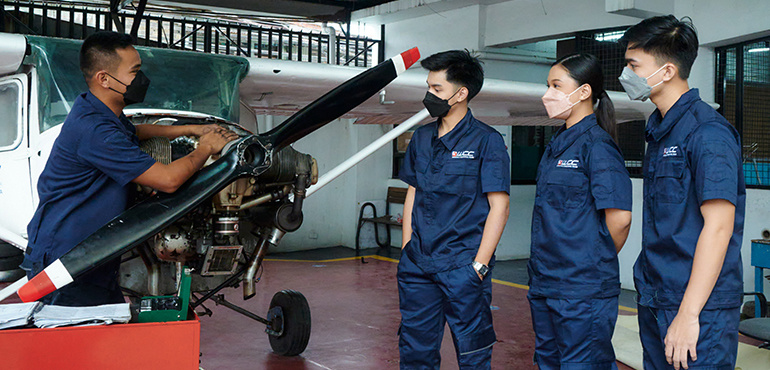
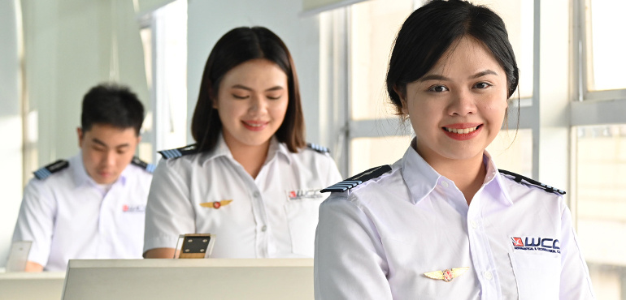
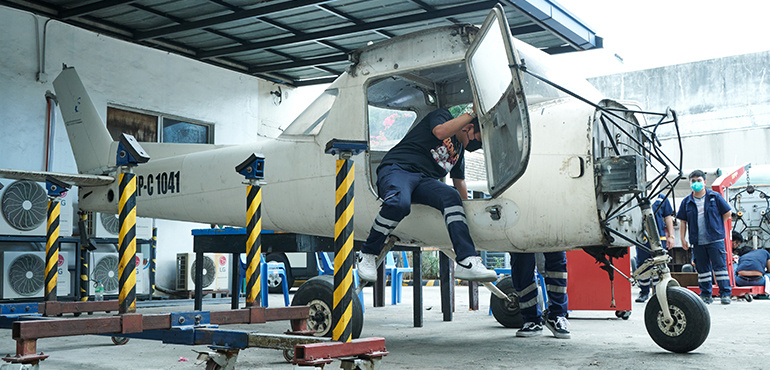
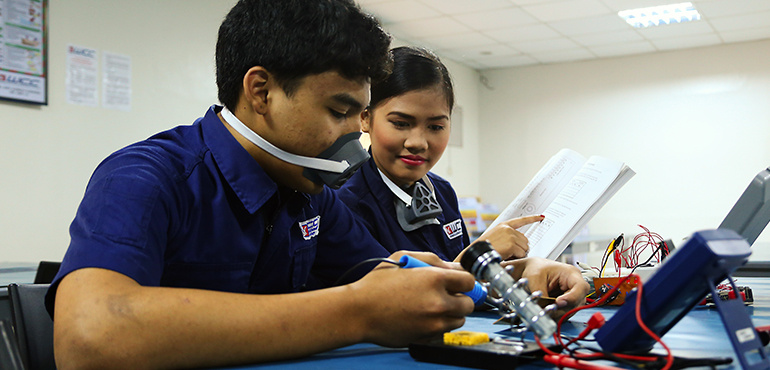
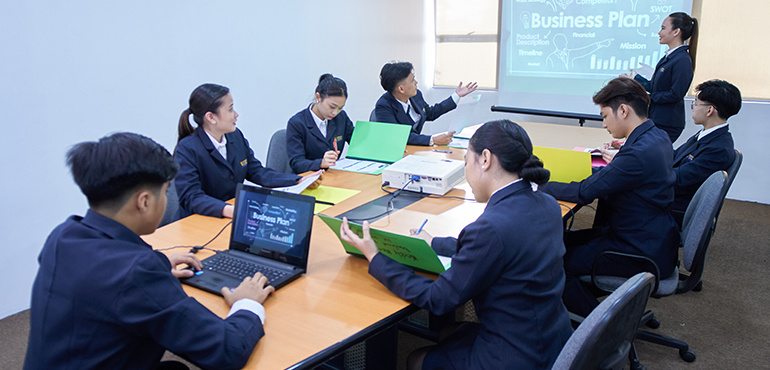
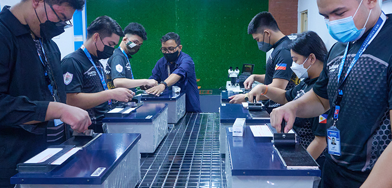
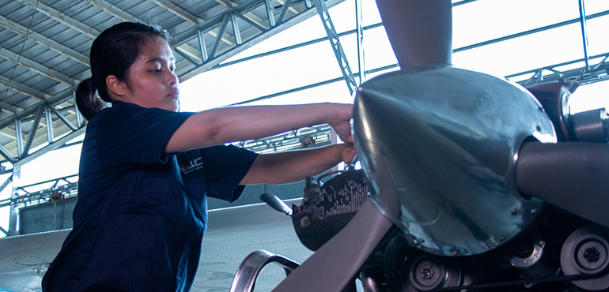
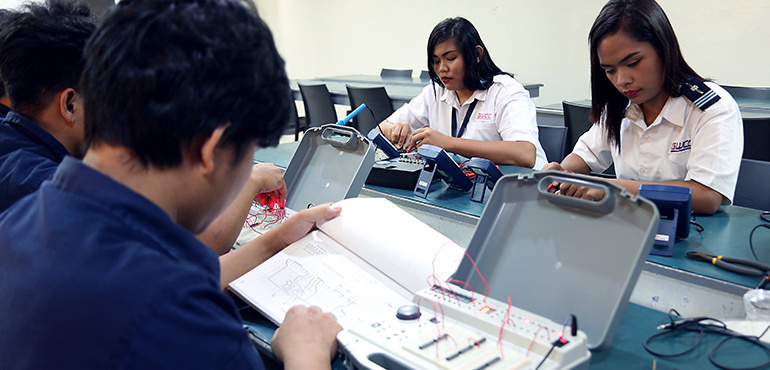

PROGRAMS OFFERED IN WCC NORTH MANILA CAMPUS
SENIOR HIGH
ABM - Accountancy, Business and Management
Course Information
The curriculum in this strand exposes you to basic concepts of business management, financial management, marketing, tourism, and corporate operations. It is designed to develop you into a world-class professional like a flight attendant or airport manager in the dynamic travel and airline industry. This strand can lead you to take the following courses in college.
STEM - Science, Technology, Engineering, and Mathematics
Course Information
Gives you a foundation in concepts related to engineering, science, and math with focus on subjects such as algebra, geometry, physics, chemistry, and earth science. Understanding of these science and mathematical concepts can be applied to real-life scenarios in aviation once you become a pilot, an aircraft mechanic, engineer, and aviation electronics specialist. This strand leads to the following courses in college.
COLLEGE
BA in Communication

Course Information
If you have a love for storytelling and would like harness it, then this program is designed for you.
Find careers in multimedia, publishing, advertising, or the entertainment industry by learning the fundamentals of art and learning how communication interacts with media, science, and technology. Receive hands-on training in the multimedia arts and design using the latest design techniques and digital technology so you can pursue the creative career you have always wanted. Also gain experience in communication arts by exploring the breadth of the field and develop essential skills to assume leadership roles in the rapidly changing communication landscape.
BS Aeronautical Engineering
Course Information
Are you interested in aircraft design, analysis, development, and manufacturing?
Through this program, you will have the opportunity to study for a career as an Aeronautical Engineer by learning the fundamentals of flight, meteorology, aerodynamics, flight safety, aircraft performance, aviation weather, aircraft maintenance, and aeronautical science. You will apply the basic principles of science, technology, engineering, and math using advanced computational tools and equipment that will ensure safety in air transportation and create innovative solutions to problems associated with developing sustainable solutions for efficient aircraft design.
BS Aircraft Maintenance Technology
Course Information
Can you see yourself in a team of technicians keeping a fleet of aircraft safe and love to work on the technical and mechanical details?
Move into an aviation career by training to become an Aircraft Maintenance Technician. Gain knowledge and important skills on how to install, modify, repair components of corporate, charter, transport category aircraft and helicopters. Receive hands-on training from experienced AMTs that teach the basic skills used in keeping fleets of planes running smoothly. As a graduate of this program, you will be responsible for servicing and repair of aircraft and aircraft components to ensure it adheres to safety standards. After successful completion, you will find wide employment opportunities in the industry and ladder to managerial and supervisory roles.
BS Avionics Technology
Course Information
Do you want to learn how to repair and improve the navigation and control systems of planes and all its electronic components?
Then the Avionics program is a perfect fit. With action-based training, you will gain enough instruction by learning to repair, service, install, modify, and maintain the electrical and electronic systems; communication systems, navigation and data systems; auto-flight systems, and aircraft systems—in all types of airplanes and helicopters. As an Avionics professional you will be responsible for making sure flight-critical systems run smoothly to ensure passenger and crew safety. After completion of the program you will be equipped with the knowledge and skills in the avionics technological sciences to prepare you to assume leading roles in the avionics industry.
BS Business Administration major in Marketing Management
Course Information
Have you ever been interested in business management, administration, finance, and marketing?
Then you can find a fulfilling career as a business manager in marketing. Gain practical business knowledge and learn the tools on how to apply marketing concepts to deliver results. Aside from gaining business knowledge and skills, you will receive knowledge in the fundamentals of business topics including accounting, finance, and management. During this course you'll deepen your understanding of communication information that will enable you to enhance customer experiences with a business or brand and develop your key abilities to discover, target, reach, acquire, and retain your customer base.
BS Business Administration major in Operation Management
Course Information
If you have been thinking about pursuing a Business Administration course, then the business world most likely appeals to you. Master the ins and outs of business by learning the fundamentals of business administration. Gain the necessary skills to adapt based on new information and ever-changing markets. Learn how to design efficient and productive processes in operations. Develop the essential management skills by examining the various organizational methods that support the organizational structure, learn about effective resource allocation, project management, and how to ensure quality and improve overall organizational efficiency to achieve success.
BS Criminology with Focus on Aviation Safety
Course Information
Do you want to learn what goes on behind-the-scenes of a crime investigation? Are you curious about human behaviors, and you are a whiz at collecting and interpreting data?
Then you can start your career in aviation with this Criminology course which provides you with a broad-based understanding of the criminal justice system and prepare you to assume leadership roles in aviation safety or pursue a graduate degree in the fields of study like education or law. During this four-year course, you will learn about safety management and how to adapt to the ever-growing threats and risks to security in aviation and the workplace. Learn about crisis management and risk assessment, the best practices in civil aviation, and gain the in-demand skills to address today's security challenges and apply this knowledge in the aviation setting.
BS Hospitality Management
Course Information
Would you like to find job security and an opportunity to travel the world?
Then it makes perfect sense to enter the exciting hospitality industry. Learn not just the business side of it but get to learn vital skills in food and beverage, marketing and to prepare you to ladder in supervisory roles within the industry. Receive action-based learning led by industry experts as you examine the fundamentals of accounting, marketing, and business. Develop and gain in-demand skills for employment and /or career progression in the food and beverage/front of house sector and gain exposure to all sectors of the industry by working in global partner institutions - a clear advantage when entering the hospitality industry.
BS Information Technology major in Mobile Development
Course Information
Do you want to make real-world impact in today's ever changing digital landscape?
Press play on your dreams and be part of the dynamic digital industry. This four-year course is designed to equip you with broad range of skills across various digital technologies, from digital graphics to mobile app development. Develop the skills and receive in-depth training in design, development, and implementation of computer networks and the system security. Find your strengths in the course curriculum and develop real-life skills to succeed in the digital world.
BS Psychology
Course Information
If the brain and how its mental processes affect human behavior fascinate you, then you would love learning about it to better understand how we think, act, and feel.
Pursue careers in arts, education, healthcare, research, or human resources by learning the complex factors which shape one's behavior. During the four-year program, gain broad-based skills like critical thinking and better communication skills which are helpful in forming a solid foundation for a variety of professions or to pursue a graduate degree in many fields of study including medicine and law.
BS Tourism Management with Flight Attendant Course
Course Information
If traveling around the world, learning various cultures, and meeting people excites you, then a career in tourism is right up your alley.
Get real-world opportunities in the travel and hospitality industry through this aviation-focused Tourism Management program. Gain knowledge across disciplines as you study key areas of tour and travel operations, transportation, accommodation, food and beverages, events management, allied services, entertainment and recreation, tourism research and education, tourism planning and development and other tourism services. As a graduate of this program, you will possess the global skill set that will allow you to assume roles in managerial, executive, or entrepreneurial in the dynamic tourism sector and the opportunity to solve real-world challenges in the industry with a comprehensive business plan.
2 - YEAR COURSE
Diploma in Aircraft Maintenance Technology
Course Information
Are you interested to learn how to service and repair an aircraft in two-years' time?
Our full-time two-year diploma program in Aircraft Maintenance Technology offers action-based training through instruction led by industry experts to help you develop the important skills on how to service and repair aircraft and aircraft components to ensure it adheres to safety standards. After successful completion, you may enter several employment areas as an Aircraft Maintenance mechanic and work your way toward a Bachelor of Science in Aircraft Maintenance Technology degree to assume leadership roles.
Diploma in Avionics Technology
Course Information
Do you want to fast-track your aviation career through a career in avionics?
Learn how to service a plane's electronic instruments, such as radio communication devices and equipment, radar systems, and navigation aids when you train for an aviation career through a diploma in Avionics. Study the important skills on how to repair and install all the electrical and electronic systems—from communication systems, navigation, and data systems; auto-flight systems, and aircraft systems—in all types of aircrafts. This program will also allow you to work your way toward a Bachelor of Science in Avionics Technology degree.